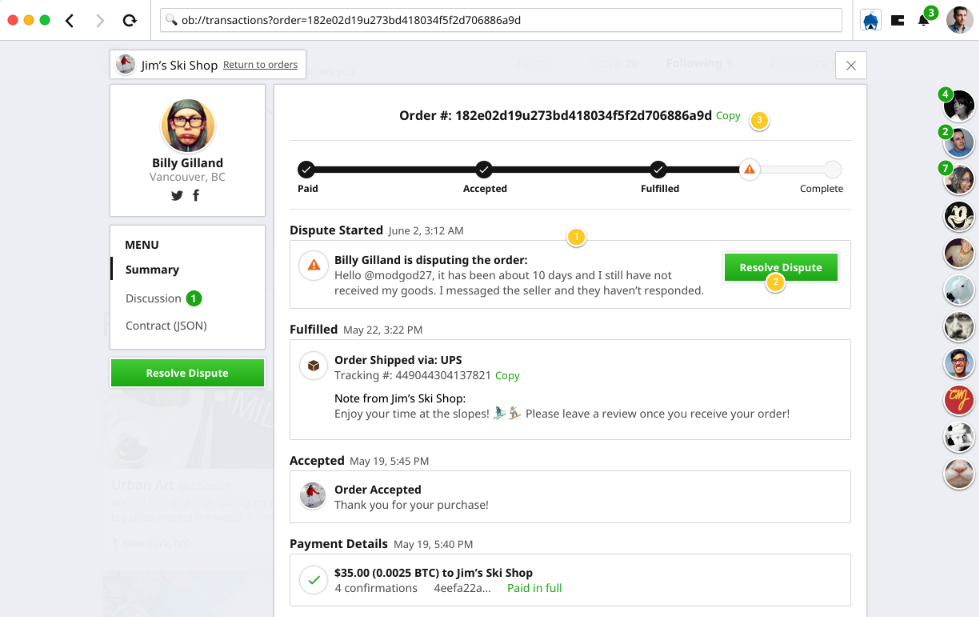

Decentralizing ecommerce is an important part of the future we believe in. We are working to build a world with greater access to global commerce and more opportunities for people everywhere to build the lives they want. We believe this is made possible with decentralized money like Bitcoin and decentralized marketplaces like OpenBazaar.
It’s a big vision. Much of the work we are doing right now is largely untangling some of the technological and psychological knots the infrastructure and assumptions of the last 20 years have made for us all.
One of the first and biggest knots we knew had to be untangled for a decentralized marketplace like OpenBazaar to be feasible was a pretty basic service other marketplaces and storefronts have historically provided: dispute resolution.
Think about it: in a decentralized network that’s made only of the individual people that participate in it, and transactions exist only between the people engaged in them, what happens when something goes wrong with an order?
Payments in OpenBazaar
For a bit of background, OpenBazaar currently uses 3 different cryptocurrency payment types:
- Direct
- Offline
- Moderated
Generally, if a buyer trusts a seller they can just send their coins directly to them in a direct payment. If the seller is offline at the time of payment, that creates a slightly different payment type where they just have to claim their coins when they return to their store. (You can read more details about each of these payment types here.)
Then there are moderated payments, which is what a buyer can use to send coins to a vendor they do not yet know or trust or to provide an extra layer of security for higher cost transactions.
What is a moderated payment?
Moderated payments are an important part of the OpenBazaar checkout experience and something that we believe is a valuable application of a unique feature that Bitcoin and related cryptocurrencies have: multisignature (multisig) addresses.
Multisig addresses work like an escrow account between a buyer and a seller by pulling an objective third party into the checkout process, called a moderator. These addresses require 2 of these 3 parties to agree in order to release the coins at the end of a transaction. Typically transactions just go smoothly between buyers and sellers and a moderator’s help isn’t ever needed, but it sure is nice to know they are there just in case! If something does go wrong, moderators will help figure out who gets the payment coins when the buyer or seller opens a dispute.

What is a moderator?
Again, a decentralized marketplace means that the entire platform is made up only of people connecting to other people with no large organizations sitting in the middle to dictate how anyone uses the platform–nor step in to provide things like dispute resolution. In a decentralized network, the individual users are each responsible for their own experiences which includes contributing positively to the community by building their business and reputation as well as protecting themselves.
Like a buyer or a seller, a moderator is also just another type of user on the OpenBazaar network. Anyone can choose to become one and make their services as a moderator available on the network. And as you may know, since it’s pretty easy to get started on the OpenBazaar network, figuring out which users are more likely to be trustworthy requires a little scrutiny, first.
How do I pick a good moderator?
As a buyer or seller, it’s important to choose a trustworthy moderator to add to your transactions if you are choosing a moderated payment. Here are some tips for choosing a good moderator and OB1, the company leading the development of OpenBazaar, now has a Verified Moderators program that is integrated into OpenBazaar to help users find someone that OB1 has reviewed who has shown themselves more likely to be trustworthy when helping settle disputes.
Also, it’s always good to check out these scam prevention tips to help you stay safe and smart when buying and selling on OpenBazaar.
Choose your own adventure
There are a lot of choices involved in using OpenBazaar, and that’s on purpose. We know it is different from what you may be used to but we are building a marketplace where each user gets to be in control of their own experience with more features and opportunities being built all the time. To see some of the other things the OB1 team is working on to make OpenBazaar the most accessible and expandable ecommerce marketplace on the planet, check out the 2018 Roadmap and make sure to sign up for the email newsletter to get the latest updates!
Do you want to help build this with us?
Download OpenBazaar right now to start buying or selling in minutes or just see what's for sale at OpenBazaar.com.
Developers, join us on Github to contribute to this open-source project!